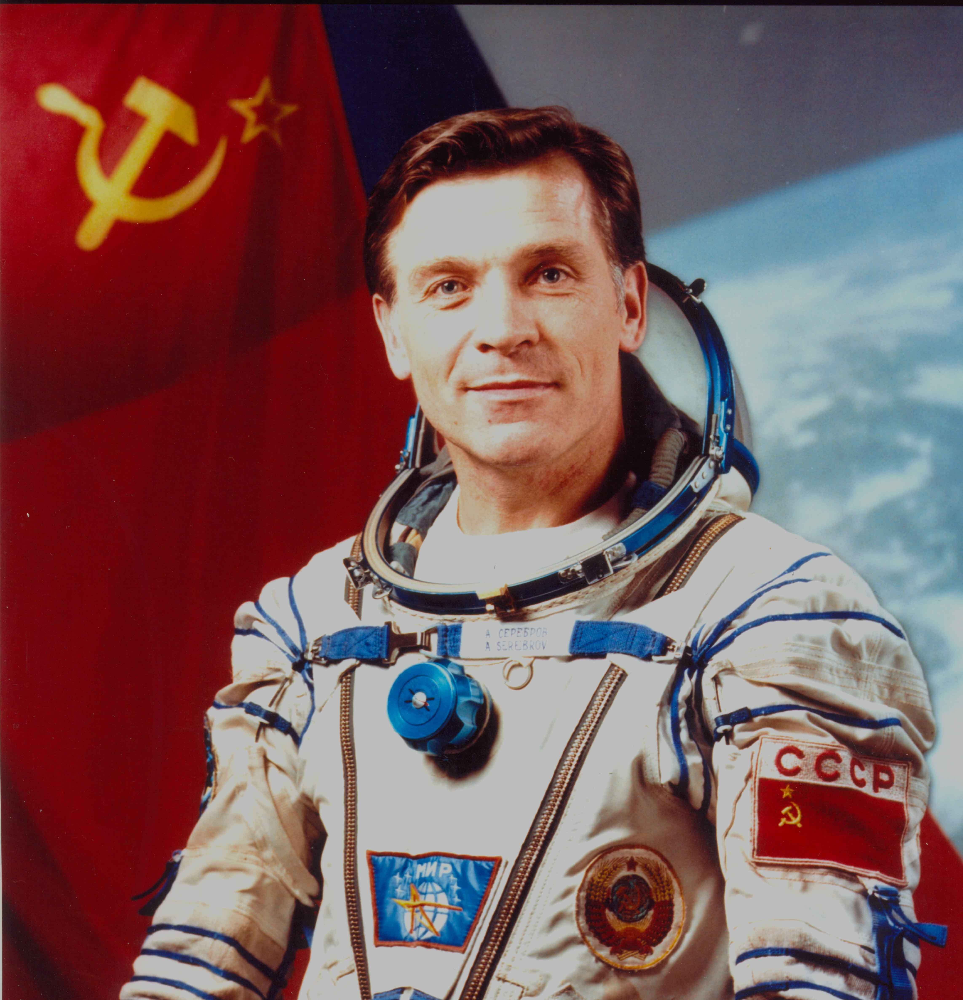

Владислав Волков
Бортинженер первого экипажа станции «Салют» и дважды Герой Советского Союза.

Два полёта
Свой первый полёт Владислав Волков совершил в 1969 году на корабле «Союз-7». Это был групповой полёт трех кораблей. В 1971 году он отправился во вторую экспедицию на станцию «Салют-1» в составе экипажа «Союза-11».
Посмертная награда
Владислав Волков погиб вместе со своими товарищами при разгерметизации спускаемого аппарата. За проявленное мужество он был посмертно награждён второй медалью «Золотая Звезда» Героя Советского Союза.
А ты знал?
Волков был не только космонавтом, но и талантливым спортсменом — он увлекался парашютным спортом и совершил более 100 прыжков.